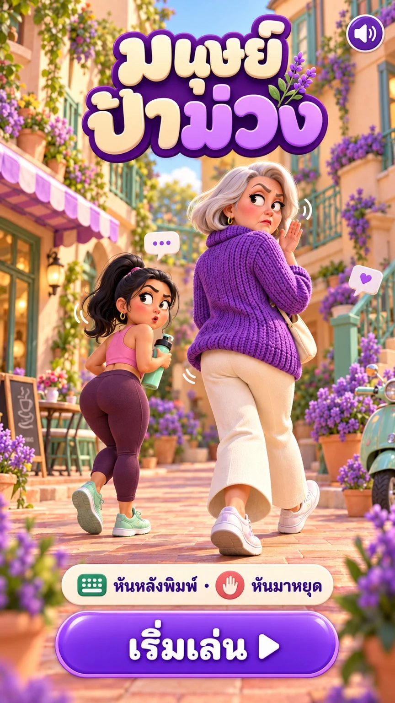
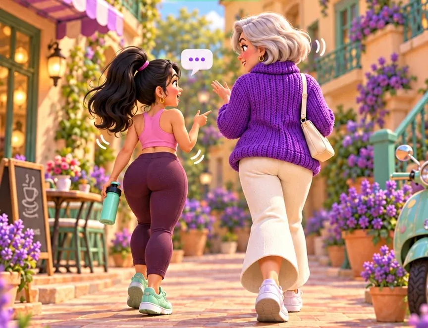
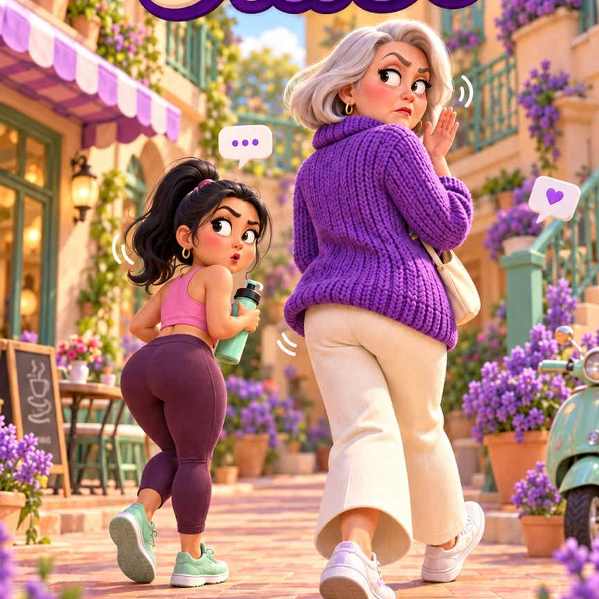

⌨️ พิมพ์ได้!
หยุดพิมพ์เมื่อป้าหันมา!
•••
❗
ป้ากำลังเดินเล่น… รีบพิมพ์เลย
พิมพ์ตามนี้⭐ 0
แตะปุ่มด้านล่างเพื่อพิมพ์...
แตะแป้นเพื่อพิมพ์ · ถ้าป้าหันมาต้องหยุดทันที!
ผ่านด่าน!
ป้าจับไม่ได้!
⭐⭐⭐
🏆 คะแนน 0
⏳ เวลาที่เหลือ 0 วิ
🪙 ได้เหรียญ 0
📖 วิธีเล่น
เมาท์ให้ทัน ป้าหันมาให้หยุด!
1
ไฟเขียว 💚 แตะแป้นพิมพ์ เติมข้อความตามโจทย์ให้ครบ
2
ไฟเหลือง 💛 ป้ากำลังจะหันมา รีบหยุดมือ!
3
ไฟแดง ❤️ ห้ามกดแป้น ถ้ากดจะโดนป้าจับได้และแพ้!
4
ครบ 5 ข้อ 🏆 ก่อนหมดเวลาเพื่อผ่านด่าน เก็บดาวและเหรียญ ปลดล็อกด่านต่อไป
โหมดเริ่มต้นเป็น พิมพ์ง่าย แตะแป้นใดก็ได้เพื่อเติมตัวอักษรถัดไป เหมาะกับมือถือ หากต้องการพิมพ์จริง ให้เปลี่ยนเป็น พิมพ์เอง ในตั้งค่า หรือเลือกใช้แป้นพิมพ์ของเครื่อง
ข้อความในเกมเป็นเรื่องสมมติ ไม่ได้ถูกส่งหาคนอื่น และคะแนนเก็บเฉพาะเครื่องของคุณ
⚙️ ตั้งค่า
ปรับเกมตามใจ 💜
⌨️ วิธีพิมพ์
พิมพ์ง่าย = แตะปุ่มใดก็เติมตัวอักษรไปเรื่อย ๆ · พิมพ์เอง = ต้องกดตัวอักษรให้ตรงจริง
👀 ระดับความหูไวของป้า